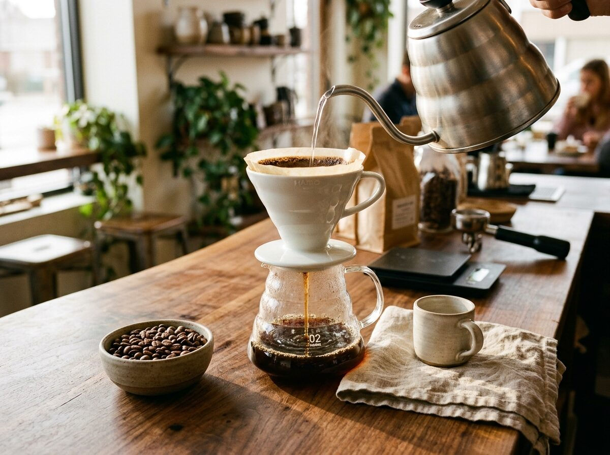

Barra de especialidad · Barrio El Vado, Cuenca
Café ecuatoriano de altura extraído con calma y oficio.
Origen Cuenca es una cafetería ficticia creada por AV·STUDIO para mostrar cómo tu barra de café puede presentar lotes ecuatorianos, métodos filtrados, repostería y pedidos rápidos por WhatsApp.

Tostaduría y trazabilidad (Ejemplo)
Perfil sensorial de referencia
Granos seleccionados de fincas del sur del Ecuador.
Selecciona un origen para ver cómo una cafetería puede educar a sus clientes sobre perfiles de taza y métodos recomendados.

Barismo de especialidad
Cada molienda y temperatura explicada con claridad
Un espacio editorial dedicado a la barra ayuda a diferenciar una cafetería de autor: destaca tus métodos filtrados, moliendas disponibles para casa y maridajes con repostería artesanal.
- Extracciones en V60, Chemex y Prensa Francesa preparadas al momento.
- Presentación de granos en bolsa de 250 g listos para llevar o moler.
- Pedido previo sin filas mediante resumen directo por WhatsApp.
Carta digital en USD
Bebidas calientes, frías y repostería
Ubicación y horarios (Ejemplo)
Solicitar web similar por WhatsApp
Barrio El Vado · Cuenca, Ecuador
Lunes a sábado: 07:30 a 20:00 · Domingos: 08:30 a 18:00 (24h).
Negocio ficticio de muestra creado por AV·STUDIO.